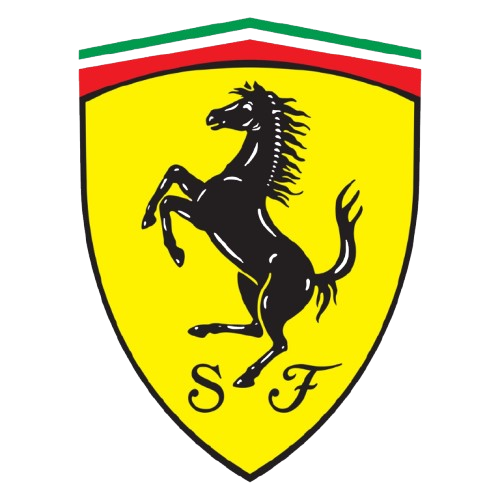

Ferrari SF90 StradalePerformances et consommation de la Ferrari SF90 Stradale
La Ferrari SF90 Stradale est une hypercar hybride rechargeable
combinant un V8 biturbo de 4 litres et trois moteurs électriques,
pour une puissance cumulée d'environ 1000 chevaux. Elle accélère de
0 à 100 km/h en 2,5 secondes et atteint une vitesse maximale
d'environ 340 km/h.
Grâce à son architecture hybride, elle peut rouler en mode 100%
électrique sur une courte distance, avant que le V8 ne prenne le
relais. La consommation homologuée en cycle mixte se situe autour de
6 à 7 L/100 km, un chiffre optimisé par l'assistance électrique mais
qui grimpe rapidement en usage sportif.